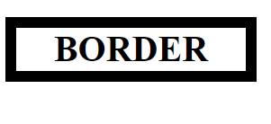
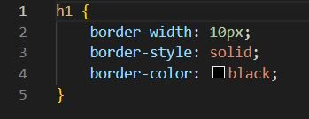

What is the difference between Margin, Border, and Padding?
Every element (h1, h2, div, dpan, li, etc) has a container. A container is like an invisible box where the element lives.
You can adjust the spacing of the container using margins and paddings. We will discuss more about these later.
Let's talk about borders first...

That thick black square on the image above is the border of the content or element. It is clear or transparent, with no setting by default.
You can change different setting style for your border. You can change the thickness, the color, the pattern and many more.
The code below is the code for the border on the image above.

Now that you know where the border is, it will be easier for you to understand margin and padding.
So basically, margin is the space between the border and other elements. It is OUTSIDE the border.
Whereas, padding is the space between the content and the border. It is INSIDE the border.
Some more key differences are:
Margin can be negative. Padding cannot
Padding and Border Alter Dimensions. Margin does not.
Margin can be auto. Padding cannot.
WHEN TO USE...
MARGIN
PADDING
When you want to have some space around an element, or you don’t want the element to touch other elements around it.
When you don’t want your content to touch the edges of the container. Example: you have a bunch of <p> elements inside a div and you don’t want the text inside <p> elements to touch the div’s border
When you want to center an element.
When you want the background of the element to be displayed in the produced gap. Example: you have a green and an orange div adjacent to each other, and you want both divs to touch each other, but don’t want their texts to touch each other.